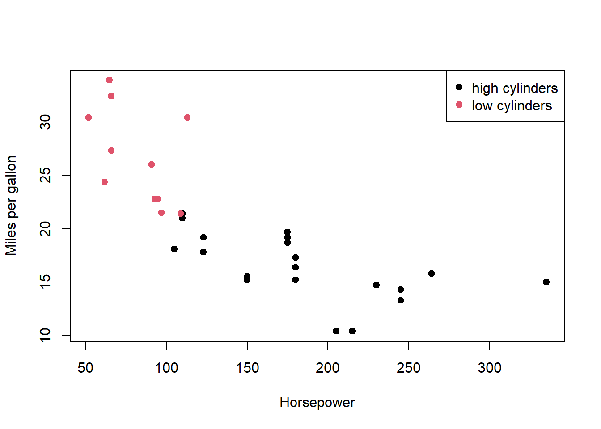

Question 1 : You are given two objects that are meant to be merged and then plotted, but the join key is misspelled and the plot is using the wrong column.
The first change I made was adding a column containing the car names to the data frame df_cars. This makes the merge operation clearer and safer by explicitly defining the matching key as a variable, which reduces the risk of data being lost or mislabelled during data manipulation. It should be noted that the code can still work without adding df_cars$carname <- rownames(mtcars), but including it improves clarity and robustness.
The next change involved fixing the merge key so that both data frames were merged using the correct and consistent column name. This ensures that each car is matched correctly between the two data frames.
I then addressed variable naming by consistently using a single variable name, cyl_group. This helps prevent errors during plotting and makes the code easier to read and maintain.
The next change was converting merged$cyl_group into a factor rather than leaving it as a character variable. Treating it as a factor allows R to handle it as a categorical variable, which makes the colour mapping in the plot more reliable.
The final changes were made to the plot and legend. First, I corrected the column name used for colouring the points so that it matched the data frame. Second, in the legend, I assigned colours using numeric indices that correspond to the factor levels, ensuring that the legend colours correctly match those used in the plot.
df_cars <- mtcars##add a new column containing the car names.df_cars$carname <-rownames(mtcars)## create data for labels.df_labels <-data.frame(carname =rownames(mtcars),cyl_group =ifelse(mtcars$cyl >=6, "high cylinders", "low cylinders"),stringsAsFactors =FALSE)##merge the two data frames using car names as the matching key.merged <-merge(df_cars, df_labels, by.x ="row.names", by.y ="carname")##Convert cyl_group into a factormerged$cyl_group <-factor(merged$cyl_group)##create scatter plot, colour plots.plot(merged$hp, merged$mpg,col = merged$cyl_group, pch =19,xlab ="Horsepower",ylab ="Miles per gallon")##add a legendlegend("topright", legend =unique(merged$cyl_group), pch =19,col =seq_along(unique(merged$cyl_group)))

When doing a Merge(), by.x and by.y are used by R which column name to use as the key. For example by.x will tell R which column name to use as the key form the first data frame, and by.y tells it which column to use from the second data frame. This is useful when combining data held within two different columns with different names. If you do not use by.x and by.y when doing a merge() it will assume the key columns have the same name in both data frames.
Question 2: Wide to long and grouped summaries
The way I tackled this question was to explicitly tell R which columns represented repeated measurements of the same variable in different years, and to map those columns to a meaningful year value. By using “varying, v.names, and times, I can avoid relying on implicit column order make the transformation clear and reproducible. This creates a long-format data set where each row is a single observation.
## mean value per yearaggregate(value ~ year, data = df_long, FUN = mean)
year value
1 2020 10.44130
2 2021 11.65329
3 2022 12.35811
Long format tends to be easier to plot and analyse because the information it stores is held within columns, and observations are stored in rows; this matches the trend of how most plotting and modelling functions assume the data is structured. This makes it straightforward to map variables to aesthetics (x, y, colour) and to apply grouped summaries or statistical models. In brief, whereas wide first is good for data entry, long format is better for analysis, modeling and summaries.
Question 3 : Controlled randomness and NA handling
The way I approached the coding section of this question is by first showing that mean(x) returns NA to confirm that there is missing data. Then I moved onto replacing the NAs with the median of non-missing values, “is.na(x)” identifies missing positions, then “median(x,na.rm = TRUE)” ensures that only the observed values are computed. This results in only the missing values being replaced. I ended it with the mean(x) to show that it no longer returned any NAs.
##set.seed(123) guarentees that the random number generation in R## is repeatable and predictable for debugging,research, etc.###set.seed(123)x <-rnorm(20, mean =5, sd =2)x[sample(1:20, 4)] <-NA##mean before replacing NA'smean(x)
[1] NA
##replace NA's in x with non-missing values.x[is.na(x)] <-median(x, na.rm =TRUE)##mean after replacementmean(x)
[1] 5.345223
One of the downsides of median imputation is that it distorts data distribution. When it replaces missing values with the same number (the median), it creates an artificial spike at that value. This causes two main problems: 1. Reduces natural variability and 2. Makes the distribution look more “peaked” than it really is. This can mislead research results and change the outcomes of hypothesis tests.
Question 4 : Writing a small, flexible summary function
I approached this question by first writing a function that confirms its inputs, then checks if the object is a data frame, checks that the requested column exists, and that all specified columns are numeric. I then used these column names to compute sample size, mean and standard deviation for each variable while handling missing values.
## Define the functionmy_summary <-function(df, cols) {## Check that df is a data frameif (!is.data.frame(df)) {stop("df must be a data frame") }## Check that all requested columns existif (!all(cols %in%names(df))) {stop("Some columns are not present in the data frame") }## Check that all specified columns are numeric non_numeric <- cols[!sapply(cols, function(x) is.numeric(df[[x]]))]if (length(non_numeric) >0) {stop(paste("Non-numeric columns:", paste(non_numeric, collapse =", "))) }## Create summary statistics summary_df <-data.frame(n =sapply(cols, function(x) sum(!is.na(df[[x]]))),mean =sapply(cols, function(x) mean(df[[x]], na.rm =TRUE)),sd =sapply(cols, function(x) sd(df[[x]], na.rm =TRUE)),row.names = cols )return(summary_df)}## Demonstration using mtcarsmy_summary(mtcars, c("mpg", "hp", "wt"))
n mean sd
mpg 32 20.09062 6.0269481
hp 32 146.68750 68.5628685
wt 32 3.21725 0.9784574
Using [[ inside of a function is safer than $ for a couple of reasons. The first is due to how it is designed for programmatic access and how it can reliably work with column names stored as character strings. On the other hand, $ only works with literal names; however, it can perform partial matching, but this can silently return NULL if a column is missing, causing bugs to be harder to detect.
Question 5: Regular expressions for variable name cleaning
The way I tried to approach this question was to essentially meet each specification slowly but surely, by targeting the spaces, making sure everything is lowercase, punctuation, and ending it by collapsing multiple underscores into a single one, and that names do not start with a digit. (I explain the regex choice underneath the code)
vars <-c(" temp.C ", "RH(%)", "soil-moisture", "2nd_reading", "sensor.ID")vars_clean <- vars## trim spacesvars_clean <-trimws(vars_clean)## lowercasevars_clean <-tolower(vars_clean) ## replace specific punctuation with _vars_clean <-gsub("[,().%]", "_", vars_clean)## replace any remaining non-alphanumeric chars with _vars_clean <-gsub("[^a-z0-9_]", "_", vars_clean) ## collapse multiple underscoresvars_clean <-gsub("_+", "_", vars_clean) ## prefix starting digits with x_vars_clean <-gsub("^([0-9])", "x_\\1", vars_clean) vars_clean
The regex that I chose to use was a character class ([, (). %]) to target only the specified punctuation and replace them with underscores. I have used the broader class [^ a - z 0-9_] to make any non-alphanumeric characters normalised safely without messing with the underscores already there. The pattern “+” collapses runs of underscores created by multiple substitutions into a single underscore; this is to avoid messy names. Finally, I have used ^ ([0-9]) to check the start of the string so only the first digits are prefixed with “x”, leaving the internal numbers alone.
Question 6: Factor relevel + model interpretation
After loading in the iris data set, I then moved on to making virginica the reference level. Next was fitting the linear model using the sepal length and species. Finally, I created a summary showing the coefficient table.
## Load the iris dataset (built-in)data(iris)## 1. Relevel Species so that "virginica" is the referenceiris$Species <-relevel(iris$Species, ref ="virginica")## 2. Fit the linear modelmodel <-lm(Sepal.Length ~ Species, data = iris)## 3. Show the coefficient tablesummary(model)$coefficients
When we change the reference level to virginica, the intercept of Sepal.Length’s mean will change from setosa to virginica. The coefficients for setosa and versicolor now measure how much their mean differs from virginica’s mean. A negative estimate would indicate that the species has a shorter average sepal length than virginica; comparatively, a positive estimate would indicate a longer one. This would not change the overall values, only the interpretation of the coefficients.
Question 7: Operating on a list of data frames
First, I used lapply to return a list of means, then I used unnlist() to force the list from lapply into a numeric vector. This is to say, I used unlist() to combine the results. Finally, I extracted and combined all the mpg values across the data frames before calculating the overall means.
df1 <- mtcars[1:10, c("mpg", "hp")]df2 <- mtcars[11:20, c("mpg", "hp")]df3 <- mtcars[21:32, c("mpg", "hp")]dfs <-list(df1, df2, df3)##compute the mean of mpg for each df using lapplymean_mpg_list <-lapply(dfs, function(df) mean(df$mpg))mean_mpg_list
[[1]]
[1] 20.37
[[2]]
[1] 19.89
[[3]]
[1] 20.025
##combine results into a single vectormean_mpg_vector <-unlist(mean_mpg_list)mean_mpg_vector
do.call(rbind,…) takes a list of data frames and stacks their rows into a single data frame. It’s useful here because it lets you merge all the mpg rows from different data frames into one continuous data frame. This allows you to calculate the overall mean directly, without having to unlist first or do looping manually. In essence, it condenses the list structure into a single table, making it easier for analysis.
Question 8: Matrix vs data frame behavior
I started this question by showing the matrix first, then demonstrated that arithmetic on a numeric matrix works as they are all numeric. I then converted the matrix into a data frame and added a factor column. I attempted to multiply the data frame by 2; however, due to the data frame now containing a non-numeric column, this failed. To show that I could still do arithmetic, I used a subset of data within the data frame, only using the numeric columns.
m <-matrix(1:12, nrow =3, byrow =TRUE)colnames(m) <-c("A", "B", "C", "D")##view the matrixm
A B C D
[1,] 1 2 3 4
[2,] 5 6 7 8
[3,] 9 10 11 12
##matrix arimeticm*2
A B C D
[1,] 2 4 6 8
[2,] 10 12 14 16
[3,] 18 20 22 24
##convert to data framedf <-as.data.frame(m)## add a factor columndf$Level <-factor(c("low","high","low"), levels =c("low","high"))df
A B C D Level
1 1 2 3 4 low
2 5 6 7 8 high
3 9 10 11 12 low
##attempt arithetic on the full data framedf*2
Warning in Ops.factor(left, right): '*' not meaningful for factors
A B C D Level
1 2 4 6 8 NA
2 10 12 14 16 NA
3 18 20 22 24 NA
##perform arithetic only on numeric columnsdf_numeric <- df[,1:4]df_numeric *2
A B C D
1 2 4 6 8
2 10 12 14 16
3 18 20 22 24
Matrices in R must be homogeneous, meaning all the data they contain is of the same type, usually numeric. This ensures that mathematical operations are always well defined and can be applied to the entire matrix at once. In contrast, data frames are heterogeneous, meaning they can store multiple types of data (such as numeric and character) within the same structure. For statistical modelling, this is important because real datasets often include both numerical variables and categorical (factor) variables, which can be used together in regression or ANOVA models; matrices cannot do this directly without converting data types.
Question 9: Power analysis with a different function
Following the instruction to load the pwr package, I proceeded to set the number of groups (k). effect size (f), desired power, and significance level. This was to allow me to compute the required sample size for a one-way ANOVA. Finally, I displayed the result.
## Load the pwr packagelibrary(pwr)## Power analysis for one-way ANOVAanova_power <-pwr.anova.test(## number of groupsk =4, ## effect size (Cohen's f)f =0.25, ## desired powerpower =0.8, sig.level =0.05)## Display the resultanova_power
Balanced one-way analysis of variance power calculation
k = 4
n = 44.59927
f = 0.25
sig.level = 0.05
power = 0.8
NOTE: n is number in each group
At a conceptual level, Cohen’s d in a t-test tells you the difference between two groups only. This is contrasted by how Cohen’s F in ANOVA tells you how much variation there is in the outcome (of an ANOVA test) by explaining the differences between groups relative to the within-group variance, across all groups involved. In essence, Cohen’s d in t-test is a difference between the means of a pair, whereas Cohen’s f in ANOVA is the overall variance explained.
Question 10: Authoring and indexing a deeper unnamed list
The way I went about creating the three-level unnamed list is by first defining x as a list with a length of 2, where each element is itself a list. One of the nested lists has a numeric vector length of at least 3. From here, I used numeric indexing [[ ]] to access the third element of that numeric vector and store it as a scalar. Finally, I showed the scalar result.
## Construct a three-level unnamed listx <-list(## numeric vector (length ≥ 3)list(c(4, 7, 9, 12)), list(c(1, 2)))## Extract the third element of the deepest numeric vectorresult <- x[[1]][[1]][[3]]##store as a scalarscalar_value <- x[[1]][[1]][[3]]## Show the scalarresult
[1] 9
The difference between [ ] and [[ ]] comes down to what they return. [ ] returns a subset of the original object, which is still a list even if you select only a single element. In contrast, [[ ]] extracts and returns the raw data itself. Because I want to reach a numeric value and store it as a scalar, using [ ] would give me a list instead of a number, so only [[ ]] works here.